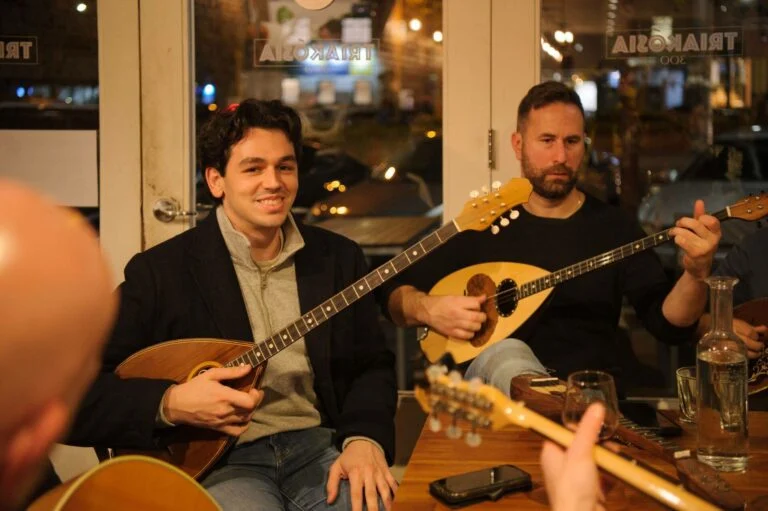

The Rhythms of Greece: Traditional Dance & Music

From the lively beats of Syrtos to the soul-stirring sounds of Rebetiko,
Greece’s traditional music and dance offer a window into its rich cultural soul.
These aren’t just performances—they’re expressions of joy, struggle, love, and legacy, passed down through generations.
In village squares and island festivals, you’ll find locals joining hands in a circle for a celebratory
Kalamatianos, a dance that blends rhythm and unity. On quieter nights, the mournful notes of a
bouzouki bring Rebetiko songs to life, often likened to the Greek blues for their deep emotional resonance.
Whether you're clapping along with a festive Cretan Pentozali or swaying gently to an old folk ballad,
Greek music and dance invite you not just to observe—but to feel, to move, and to connect
with a timeless part of the Greek spirit.